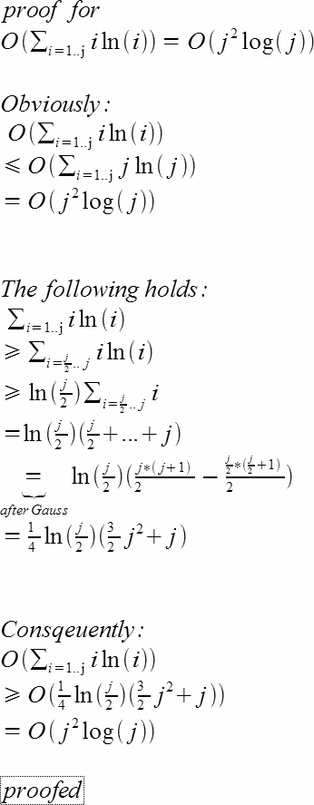

Here is the source code accompanying the article The Lazy Builder's Complexity Lesson.
In an email from Christopher Vogt I got some interesting feedback on this article. It turns out that my analysis of the complexity of the first (and worst) brute force algorithm wasn't quite correct. I wanted it to be O(N * N), but in fact in the worst case it suffers O(N * N * log N) performance.
This worst case occurs when both the job and the toolback contain N instances of a single widget. The "used" set will also grow to size N, and repeatedly searching through this set is what causes the additional log(N) factor.
Consider what happens when we examine the Jth widget in the job. By this stage the used set is of size (J-1), and we search this set J times, before inserting (an iterator to) the Jth widget in the toolbox (the first widget we haven't used).
Thus the complexity is the sum 1 log 1 + ... J log J + ... N log N, which turns out to be O(N * N * log N).
I'd like to thank Christopher again for his help, and for supplying the following proof.
